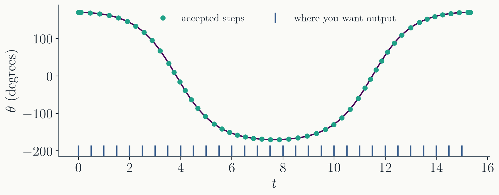
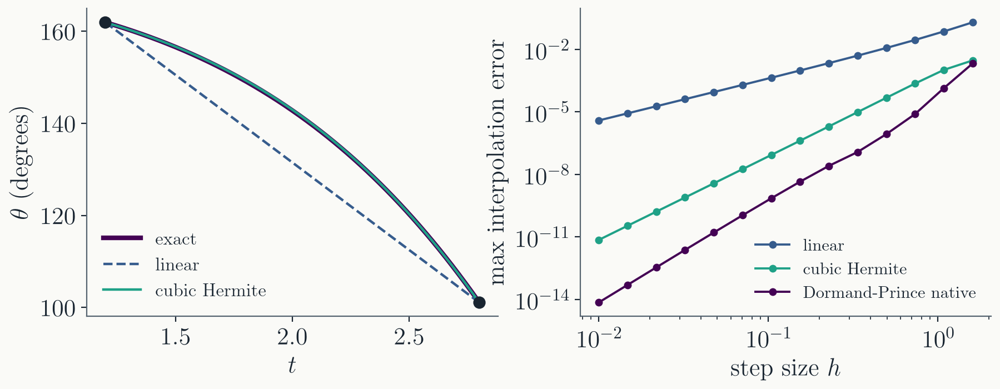
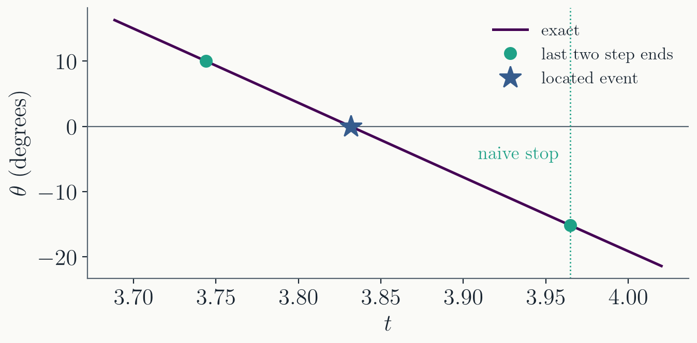
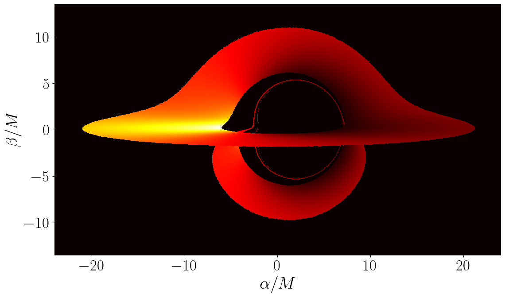

Dense output. The solution at any $t$, not
only where the steps happened to land.
Stop conditions and events.
Ending the integration when something happens, and finding
exactly when it happened.
Project 1. Raytracing a
black hole.
OpenMP. Using every core of
your machine with one line of code.
Part I · Dense output
The solution between the steps
Last time
Adaptive Dormand-Prince 5(4), one
step:
From $(t_n, y_n)$, compute the stages $k_1, \dots, k_7$;
form the 5th-order $y_{n+1}$ and the 4th-order
$y^*_{n+1}$.
Compare them against the target
$\epsilon_\mathrm{abs} + \epsilon_\mathrm{rel}\,|y|$ to get
the scalar $\mathrm{err}$.
Accept if $\mathrm{err} < 1$; either way, set
$h' = S\, h\, \mathrm{err}^{-1/5}$.
The controller decides where the steps
land. Today: what to do when you need the solution somewhere
else.
The steps land where the controller wants

Pendulum released at $\theta_0 = 170°$,
tolerance $10^{-6}$: 51 steps over one period, with $h$
between $0.095$ and $0.37$.
You want $\theta$ every $0.5$ time units
for a plot, or an animation, or a comparison with data. None
of the steps land there.
Two ways to get output where you want it
Shorten the steps so that
one ends exactly on every output time. It works, but every
output time now costs a step, and the controller no longer
chooses $h$.
Interpolate inside each
accepted step. The step already knows $y_n$, $y_{n+1}$, and
seven slopes in between: fitting a polynomial through them
costs no new evaluations of $f$.
The second option is called dense
output: a continuous approximation $y(t_n + s h)$ for every
$0 \le s \le 1$, produced alongside each step.
Linear interpolation
With $s = (t - t_n)/h$, the simplest
choice is a straight line between the step ends:
$d_2 = 0$, like $b_2$. Nobody derives
these by hand; you copy them once, carefully, and test.
The three interpolants, measured

Left: one deliberately huge step,
$h = 1.6$. The line misses badly; the cubic sits on the exact
curve.
Right: measured slopes 2.0, 4.0, and 5.0.
At $h = 0.1$ the errors are $4\times10^{-4}$,
$8\times10^{-8}$, and $7\times10^{-10}$.
Wiring it into the integrator
Give the integrator a list of output
times $\{t^\mathrm{out}_j\}$ along with everything else. After
every accepted step:
Compute $r_1, \dots, r_5$ for this
step.
For every $t^\mathrm{out}_j$ with
$t_n < t^\mathrm{out}_j \le t_{n+1}$, evaluate the interpolant
at $s = (t^\mathrm{out}_j - t_n)/h$ and store the result.
Continue stepping as before.
The controller keeps choosing $h$ for
accuracy alone; the output grid no longer has any influence on
the steps.
Part II · Stop conditions and events
Ending the integration when something happens
When is the integration over?
So far: integrate from $t_0$ to a
known $t_\mathrm{end}$. Often the end is defined by what the
solution does, at a time you do not know in advance:
A projectile hits the ground.
The pendulum passes the bottom: a quarter
of the period.
A light ray falls into a black hole, or hits
a disk.
Pass the integrator a stop condition
and check it after every accepted step:
// stop once the pendulum has passed the bottom
auto passed_bottom = [](double t, const std::vector<double>& y) {
return y[0] <= 0.0; // y[0] is theta
};
The last step overshoots

The condition first becomes true at the end
of a step, some distance past the actual crossing.
Stopping there gives the quarter period
with error $0.13$. Tightening the tolerance from $10^{-6}$ to
$10^{-9}$ only brings it to $0.04$.
The error is set by the step size, not by
the tolerance. A better integrator does not fix it.
Locating the event
Write the condition as the zero of an
event function $g(t, y)$; here $g = \theta$.
If $g$ changes sign between $t_n$ and
$t_{n+1}$, the event lies inside this step.
Inside the step, dense output gives
$y(t_n + s h)$ for any $s$. Solve
$$G(s) = g\big(t_n + s h,\; y(t_n + s h)\big) = 0$$
for $s \in [0, 1]$: a root-finding problem, bracketed by
construction.
Bisection from Lecture 3 works. Every
iteration evaluates the interpolant, never $f$.
The event, measured
Error in the quarter period of the
$170°$ pendulum:
tolerance
stop at step end
line between step ends
bisection on dense output
$10^{-6}$
$1.3\times10^{-1}$
$8.5\times10^{-5}$
$3.0\times10^{-6}$
$10^{-9}$
$3.8\times10^{-2}$
$2.1\times10^{-6}$
$3.0\times10^{-9}$
With dense output the event error follows
the tolerance: what remains is the error of the integration
itself.
The middle column is the secant method
applied once to the two step ends: good, but limited by the
line's $O(h^2)$ error.
Details that matter
Terminal or not. Some
events end the integration; others are recorded and the
integration continues (every zero crossing of $\theta$, for
instance, to measure many periods).
Direction. Often only one
direction of crossing counts, e.g. $g$ going from positive to
negative.
The blind spot. If $g$
changes sign twice within one step, the step ends agree
and the event is invisible. The fix is to cap $h$ below the
timescale on which $g$ can turn around.
A sign check at the step ends can only see
an odd number of crossings.
Part III · Project 1
Raytracing a black hole
Project 1: raytracing a black hole

Groups of 3 (graduate students with graduate students).
Due Wednesday 10/14, 11:59pm.
Integrate photon trajectories around a rotating black
hole. No GR background needed: the handout has
everything.
Validate against exact results first, then raytrace an
image of the accretion disk.
Adaptive Dormand-Prince with dense output and stop
conditions: this week's material.
The report answers the physics questions in the
handout. Selected groups present on Friday.
Parallelize the pixel loop with OpenMP: required for
everyone.
Part IV · OpenMP
Using every core
One core is a fraction of your machine
A current laptop has 8 to 16 cores. Every program in this
course so far has used one of them.
A raytraced image is a loop over pixels, and
every pixel's ray is computed without reference to any other.
Such a loop can be split among cores with no change to the
physics.
OpenMP is a set of compiler
directives for exactly this: you mark a loop, and the compiler
divides its iterations among threads, one per
core.
OpenMP in one line
#include <omp.h>
// ...
const int n_items = 12;
std::vector<int> who(n_items);
#pragma omp parallel for
for (int i = 0; i < n_items; i++) {
who[i] = omp_get_thread_num(); // which thread ran iteration i
}
// ... then print who[i] for every i
The #pragma line is the only
change to an ordinary serial loop.
Compile with g++ -std=c++20 -O3
-fopenmp. Without -fopenmp the pragma is
ignored and the loop runs serially.
What it does
$ OMP_NUM_THREADS=4 ./a.out
item 0 done by thread 0
item 1 done by thread 0
item 2 done by thread 0
item 3 done by thread 1
item 4 done by thread 1
item 5 done by thread 1
item 6 done by thread 2
item 7 done by thread 2
item 8 done by thread 2
item 9 done by thread 3
item 10 done by thread 3
item 11 done by thread 3
The 12 iterations are split into 4
contiguous chunks, one per thread, and the chunks run at
the same time.
The number of threads is set by the
environment variable OMP_NUM_THREADS; by
default OpenMP uses every core.
OMP_NUM_THREADS=1 runs
the loop serially: the first thing to try when a parallel
program misbehaves.
A race condition
const int n_terms = 10000000;
long long total = 0;
#pragma omp parallel for
for (int i = 1; i <= n_terms; i++) {
total += i;
}
$ ./a.out # 32 threads
total = 6982422656250
$ ./a.out
total = 2783203593750
$ ./a.out
total = 585937812500
$ OMP_NUM_THREADS=1 ./a.out
total = 50000005000000
Wrong, and wrong
differently on each run. The correct answer is
$n(n+1)/2 = 50000005000000$. What went wrong?
Why the sum is lost
total += i is three
operations: read total, add i, write
total back.
Two threads read the same old value, each
adds its own i, each writes back. One of the two
additions is gone.
Which one, and how often, depends on the
timing of the threads: a race condition. The result
changes from run to run.
The danger is any variable that several
threads write to, or that one thread writes while others
read.
Fix 1: one thread at a time
#pragma omp parallel for
for (int i = 1; i <= n_terms; i++) {
#pragma omp critical
total += i;
}
A critical block is executed
by only one thread at a time; the others wait.
The answer is now correct. The run takes
4.8 s on 32 threads, against 0.12 s on a single thread: every
iteration waits in line, and the waiting costs more than the
addition.
Fix 2: a reduction
#pragma omp parallel for reduction(+ : total)
for (int i = 1; i <= n_terms; i++) {
total += i;
}
Each thread adds into its own private copy
of total; the copies are added together once, when
the loop ends. Correct, and no waiting.
Also available for *,
min, and max.
The general rule: give each thread its own
copy of whatever it modifies. Variables declared inside the loop
body are already private to each thread.
Where this goes next
Project 1 uses everything
from Lectures 6 to 9.
Next lecture: boundary
value problems and the shooting method.